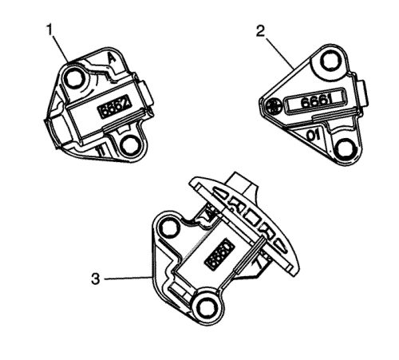
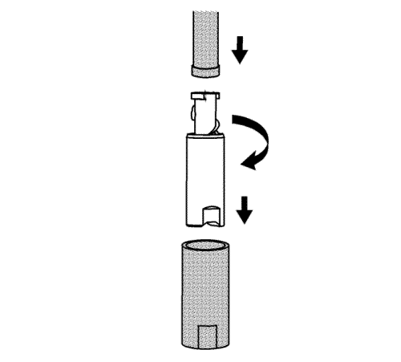
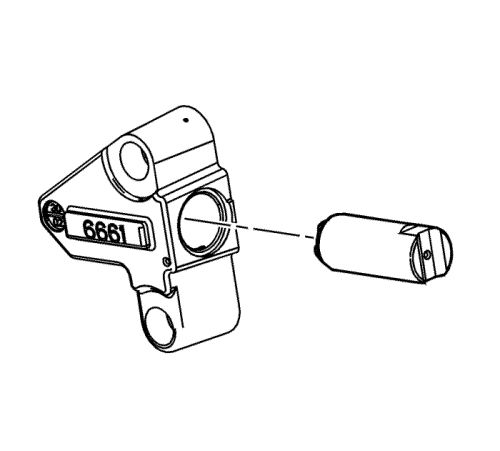
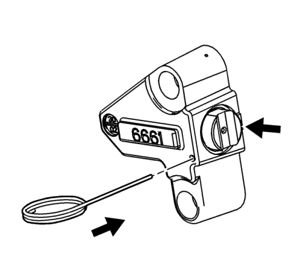
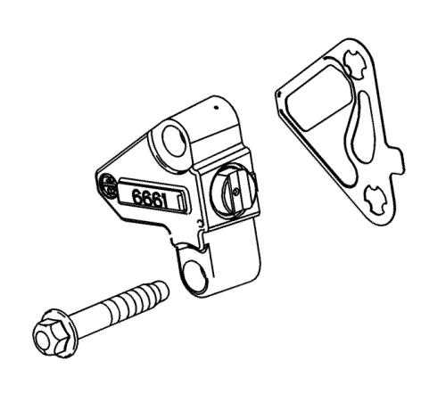
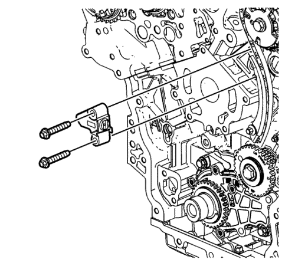
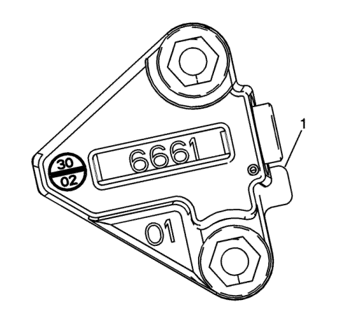
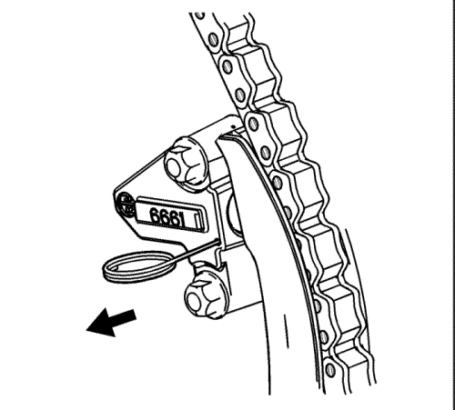

Montaje del tensor de la cadena de distribución secundaria - Lateral izquierdo
Herramientas especiales
| • | EN 45027 Herramienta tensora |
| • | EN 46112 Pasadores de retracción del tensor |
Si desea informarse sobre herramientas regionales equivalentes, consultar Herramientas especiales .

- Asegúrese de que se instala el tensor (2) de la cadena de accionamiento izquierda derecha de árbol de levas.

- Usando la herramienta EN 45027, reajuste el émbolo del tensor de la cadena de accionamiento secundaria izquierda de árbol de levas.

- Instale el émbolo en la carcasa del tensor de la cadena de accionamiento secundaria izquierda de árbol de levas.

- Comprima el émbolo en la carcasa y bloquee el tensor de la cadena de accionamiento secundaria izquierda de árbol de levas insertando los pasadores EN-46112 en el orificio de acceso situado en el lateral de la carcasa del tensor de la cadena secundaria izquierda de árbol de levas.
- Lentamente, libere la presión del tensor de la cadena de accionamiento secundaria izquierda de árbol de levas. El tensor de la cadena de accionamiento secundaria izquierda de árbol de levas deberá permanecer comprimido.

- Monte una junta NUEVA del tensor de la cadena de accionamiento secundaria izquierda de árbol de levas.
- Coloque los tornillos del tensor de cadena de accionamiento secundaria izquierda de árbol de levas a través de la junta y el tensor de cadena de accionamiento secundaria izquierda de árbol de levas.
- Asegúrese de que la superficie de montaje del tensor de la cadena de accionamiento secundaria izquierda de árbol de levas en la culata de la izquierda no presenta rebabas u otros defectos que pudieran degradar el sellado de la NUEVA junta del tensor de la cadena de accionamiento secundaria izquierda de árbol de levas.

- Coloque el tensor de la cadena de accionamiento secundaria izquierda de árbol de levas en su posición y ponga los tornillos en el bloque sin apretarlos.
Precaución: Consulte Precaución con las fijaciones en la sección Prólogo

- Compruebe la posición correcta de la lengüeta de la junta del tensor de la cadena de accionamiento secundaria izquierda de árbol de levas (1).
Apriete los tornillos del tensor de la cadena de accionamiento secundaria izquierda de árbol de levas hasta 5 N·m (44 lib. pulg.).
Apriete los tornillos del tensor de la cadena de accionamiento secundaria izquierda de árbol de levas hasta 25 N·m (18 lib. pulg.).

- Suelte el tensor de la cadena de accionamiento secundaria izquierda de árbol de levas extrayendo los pasadores EN 46112 y desbloqueando el émbolo del tensor.
- Compruebe la alineación de las marcas de calado de la cadena secundaria de accionamiento izquierda de los árboles de levas. Consulte Diagrama de alineación de la cadena de distribución - Primera Fase.
| © Copyright Chevrolet Europe. All rights reserved |